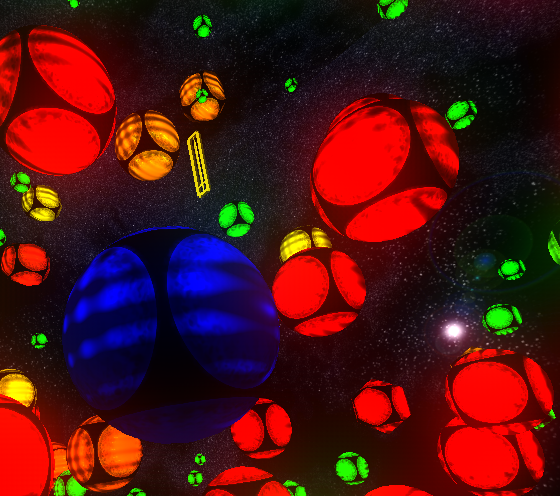
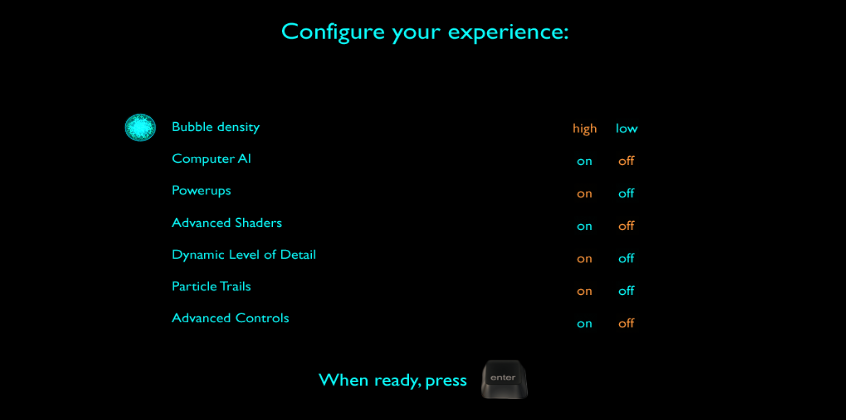
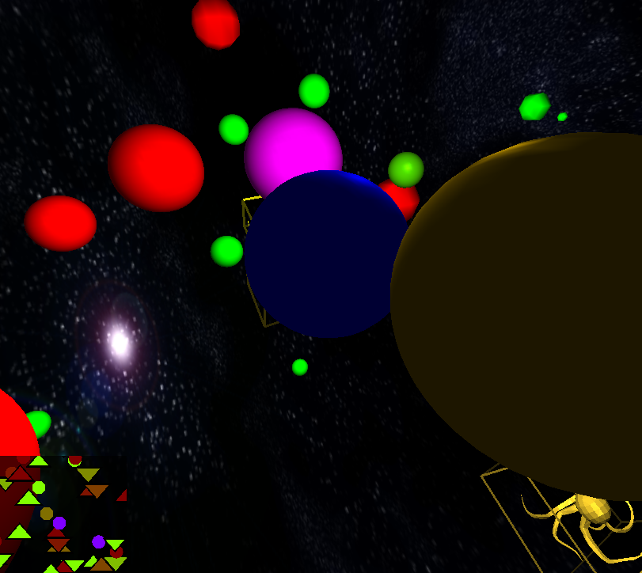

Used in both the Trail particle system and for the spheres
Timestep for integration tied to render framerate
Acceleration for powerups
Collisions
TODO
With the encompassing world sphere
If the position of a sphere is ever found to be farther from the center of the world than the radius of the world minus the sphere, the sphere collides with the world sphere. Reflections are made specularly, reversing the perpendicular component of the sphere's velocity with respect to the normal of the world sphere at this point. The normal is calculated by casting a vector from the point of the sphere to the center of the world. The positions are also immediately snapped to the inside of the sphere if the current position is found to be outside of the acceptable range.
With other spheres
Intersection between two spheres is fairly simple. In our case, when spheres hit each other, the bigger one begins to absorb the smaller one, so the check for a collision is just finding the distance between each pair of balls and seeing if this is less than the sum of the radii of the two balls.
With powerups (bounding box, visible)
Conservation of mass and momentum
Powerups
Collisions
Collisions with Powerups are determined by the collision with the bounding box of the mesh.
To calculate the collisons, we test collision of the spehre by creating an effective radius around the box
And then we use the calculated effective radius to gauge whether the distance between the center of the sphere
and the center of the mesh is less than or equal to the radius of the sphere along with the effective radius of the box.
If it is, then there is a collision. Else, there is no collision.
Types
There are 5 types of PowerUps total.
The invincible powerup, denoted by the mushroom, makes your bubble temporarily invincible (i.e. you can absorb bubbles larger than you).
To implement this I basically had a check in absorbtion code that overrides the player bubble being absorbed and instead the player absorbs the bigger bubble. When power up is active, color will flash between blue and yellow
The small sink powerup, denoted by the pear. This powerup attracts all particles around the player bubble that are smaller than it.
For this I basically change the player bubble to a sink that exerts attractive force on all particles smaller than it. When power up is active, color will flash between blue and lime green.
The sink powerup, denoted by the octopus. This power is similar to small sink, except all particles are attracted regardless of size. When power up is active, color will flash between blue and hot pink.
The speed up powerup, denoted by the heart. This powerup just make the player bubble go 10 times as fast.
The slow down powerup, denoted by the sword. This powerup makes the velocity of the player bubble 0 the moment the player hits it.
Lighting Effects (shaders)

Lighting
Two directional lights
Per-pixel lighting in a GLSL shader
Linear interpolation between vertices
Phong model
Bump mapping in a GLSL shader
Sinusodial bumps affect the normals at each pixel, providing 3D surface texture
Post-processing effects (multipass, compositing)
Bloom (bright colors bleeds out)
Scene is rendered to a off-screen framebuffer (FBO)
FBO is filtered using a GLSL shader to only keep bright parts of the image (linear ramp)
FBO is then filtered using a GLSL shader to Gaussian blur in the x direction
FBO is then filtered using a GLSL shader to Gaussian blur in the y direction
FBO is then copied to display, and the scene rendered again on top of it
Gaussian blur weights precomputed using ruby script (1dgaussian.rb) for speed with 40 samples in each direction
Advanced Image Techniques
Particle Trails
Billboarded 2D-textured sprites for speed
Emits 3000 particles per second, each with a lifetime of two seconds
Alpha blending (value depends on amount of lifetime left)
Due to alpha, particles are sorted and drawn in reverse depth-order
Dynamic Textures (time-varying)
Each sphere has two cubemap textures and we linearly interpolate between them using GLSL shaders
Mixing value is time-dependent
Amount of bump mapping is also time-dependent to give complex lighting
End-result
Start Menu
Quality settings and effects
High or low count of spheres
Ability to have AI or powerups
Turn on or off particle trails

Level of Detail
Dynamic LoD
Multiple meshes
We rendered multiple versions of each of the meshes with varying quality using collapse edges code from a2. Meshes are one of the more computationally consuming parts of the calculations, so having simpler versions of the meshes speeds things up at a cost of the objects looking a bit worse.
Sphere segments
Spheres are rendered in OpenGL as polygons with a given number of vertices along the horizontal plane and a number along the vertical plane. By reducing the number of vertices for each sphere, the per-vertex calculations are done much faster.
Level of detail relative to distance
Level of detail relative to distance renders the low quality meshes and spheres when they are far from the camera but high quality ones when the camera approaches. When the meshes and spheres are far away, the models are smaller on screen, so the loss of detail is not as noticeable.
Low Quality

Hight Quality
Compataiblity
Operating Systems
Windows (cygwin/mingw)
Mac OS X
Linux
Hardware
Some levels of detail are automatically determined if your computer does not support it
Sound
Library
SFML - Simple and Fast Music Library
When
Constant game music - Hello World (2006 Remix)
http://offog.org/music/songs.html
Sound effects upon death and another bubble being completely absorbed
http://www.grsites.com/archive/sounds/
Computer AI
Library
Level Editor
Move around in space
Drop normal and AI bubbles of random sizes around in space